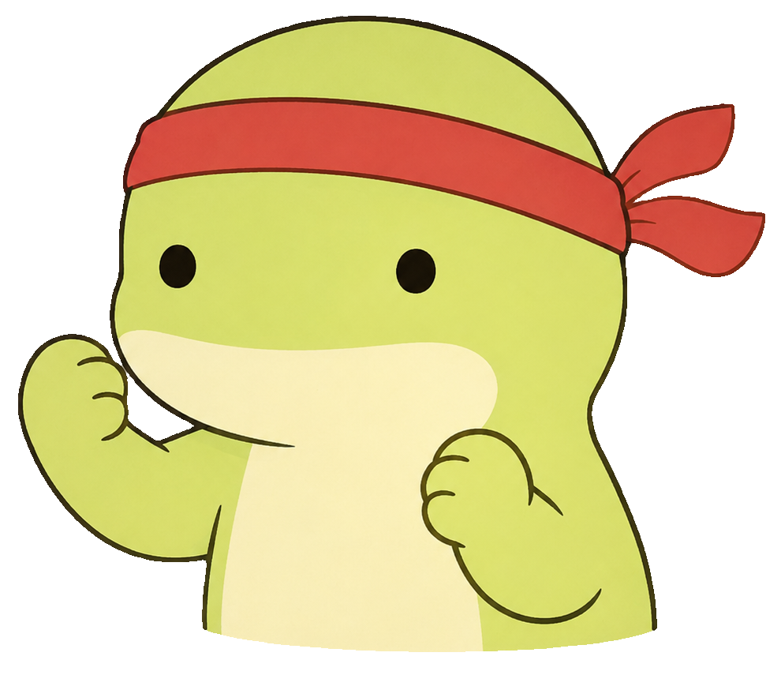

Galaxy Z Fold 3 · Landscape · 24.5 : 9
GOOD AFTERNOON
Wellington 16:20 🌤
鸟鸣白噪音
向左滑动，开始今天的计划 ⌁
FOCUS SESSION
01 / 01创建专注任务

已专注00:24:18
UI 设计整理 Geko Keeper 的界面设计
SUNDAY · AUG 02
今日 Checklist
3/ 6 完成
YOUR DAY AT A GLANCE
时间报告
72%
时间轴
081012141618
深度工作学习个人项目